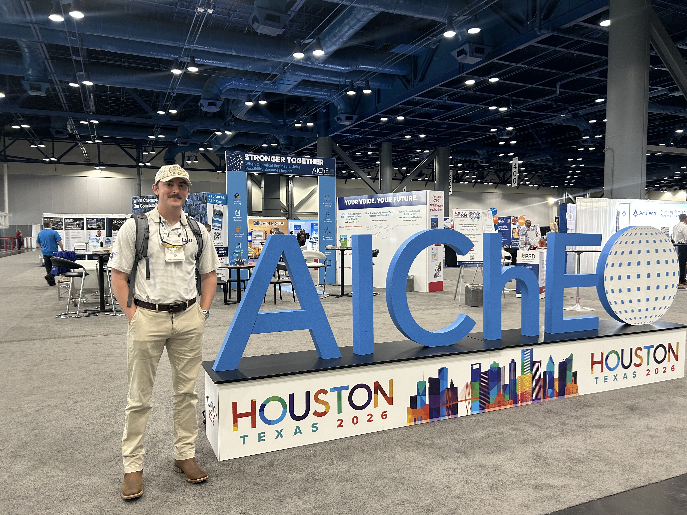

Education & Experience
Education
-

Denham Springs High School
Denham Springs, LA
Fall 2014 – Spring 2018
-

Bachelor of Science in Chemical Engineering
Louisiana State University (LSU) · Baton Rouge, LA
Fall 2018 – Fall 2022
-
Doctor of Philosophy in Chemical Engineering
Minor in Computer Science
Louisiana State University (LSU) · Baton Rouge, LA
Spring 2023 – Spring 2027 (expected)

Experience
-
Owner & Operator
Lawn Care and Landscaping Business
Spring 2018 – Summer 2025
I started with just a push mower and worked my way up to running a lawn care and landscaping business. The business was how I earned money from my senior year of high school through undergrad and into my PhD.
Running the business meant taking care of everything from the equipment to the customer relationships.
- Worked directly with customers and learned to manage the day-to-day finances of a small business.
- Planned routes, scheduled jobs, and maintained and repaired my equipment.
- Took responsibility for getting jobs done and making things right when plans changed.
- Most importantly, it taught me the value of hard work, pride in a job well done, attention to detail, and consistency.


I always made sure my customers had the best lawns in the neighborhood.
-
Graduate Researcher and Teaching Assistant
Louisiana State University · Baton Rouge, LA
Spring 2023 – Present
Research
- I work with Prof. José Romagnoli at LSU and engineers at ExxonMobil’s Baton Rouge refinery. My research looks at what plant data can tell us about how a process is running, what might be going wrong, and how to control it better.
- Gregory Robertson, Mike Kurtz, and Estelle Gustafson have helped me understand how these problems come up at the refinery. That perspective shapes the questions I explore in my research.
Teaching Assistant
- I’ve been a TA for Numerical Methods, Unit Operations, Process Control, and Advanced Process Control.
- As a TA, I gave lectures, answered students’ questions, helped them work through problems and understand the concepts behind them, and graded coursework and provided feedback.

Attending the AIChE conference to present research.